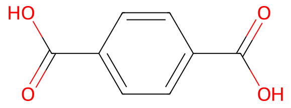
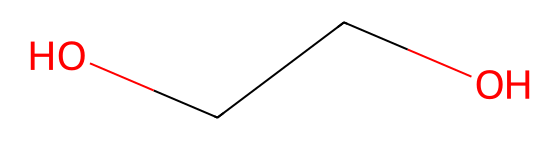

令和元年度 問30 高分子化学
分子量10万のポリエチレンテレフタラートの重合度の範囲として、最も適切なものはどれか。ただし、各元素の原子量はC=12、O=16、H=1とする。
①
300～400
②
401～500
③
501～600
④
601～700
⑤
701～800
正答
③ 501～600
重合度の計算は繰り返し単位から計算します。ポリエチレンテレフタラートはテレフタル酸（分子量166）とエチレングリコール（分子量62）より重合します。二つの分子量を合計すると228です。ポリエチレンテレフタレートは水2分子が脱水して重合するため分子量36（18×2）を引いて192です。
分子量10万のポリエチレンテレフタレートであるため重合度は100,000÷192＝520程度になります。そのため選択肢3の501～600が正答です。

